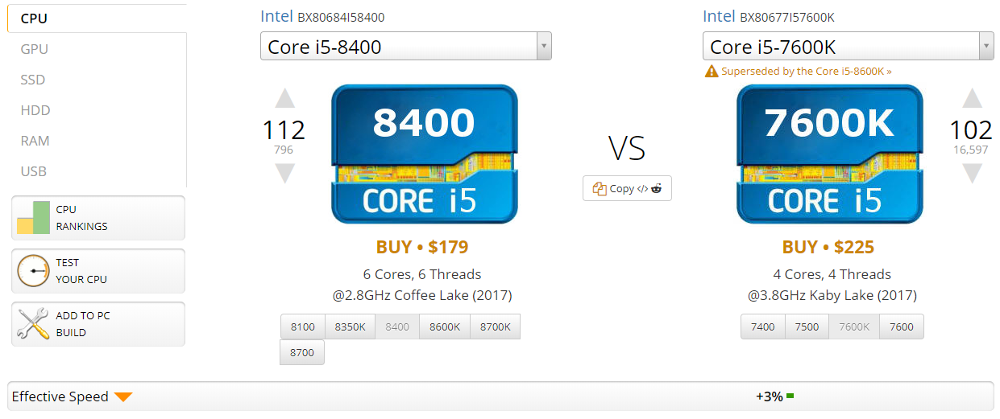
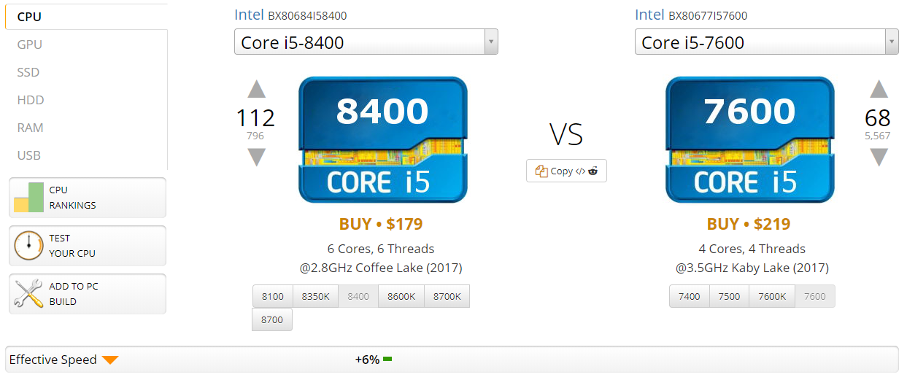
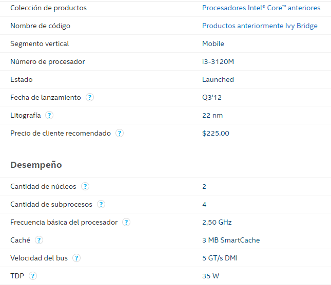
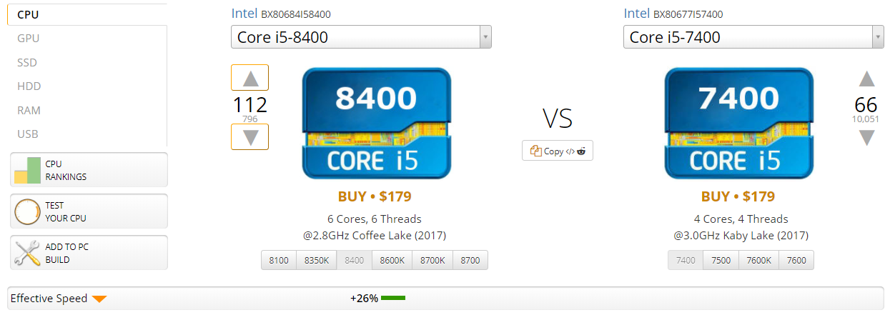
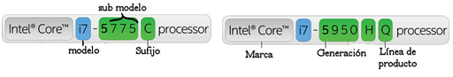

Cómo elegir el procesador adecuado en base a sus características y nuestras necesidades
Abner Lorenzo López Chávez
abner.lopezchavez@gmail.com
Estudiante de Ingeniería en Ciencias y Sistemas - USAC
Palabras clave: Intel, procesador, generaciones de procesadores, diferencias entre procesadores, características del procesador.
Cada vez que actualizamos algún equipo como: computadora, Tablet, teléfono inteligente, reloj inteligente; es porque nuestro equipo anterior quedó obsoleto, necesitamos uno más potente o por desperfecto del actual. Una de las partes más importantes de todos los dispositivos mencionados anteriormente es el procesador, por lo que al actualizar nuestro dispositivo debemos asegurarnos que estamos escogiendo el adecuado. Como existe una diversidad de procesadores, es necesario conocer un poco más a fondo sus características, cómo diferenciar entre uno y otro, cuál se acopla a nuestras necesidades, sobres los procesadores para elegir el correcto. Existen muchas limitantes, como nuestro presupuesto, disponibilidad del producto, por mencionar algunas; por lo que nuestra elección también dependerá de todos estos factores buscando el de mayor costo-beneficio.
MATERIALES Y MÉTODOS
- Obtención de la información necesaria
La información que proveen muchos comerciantes de equipos electrónicos ha mejorado con el paso del tiempo. En un inicio solamente se mencionaban características muy esenciales como: cantidad de memoria, versión general del procesador, tamaño de pantalla; pero al adquirir un nuevo equipo percibimos que, aunque fuere un equipo reciente, no satisface nuestras expectativas. Ahora los comerciantes saben que los usuarios son más exigentes al momento de adquirir un equipo nuevo, se realizan preguntas como ¿qué velocidad tiene la memoria RAM? ¿a qué velocidad transmite información el disco duro? ¿cuál es la velocidad del procesador? Si está a nuestro alcance acceder a los equipos de muestra, existen diferentes formas para obtener la información del hardware de dicho equipo, según el sistema operativo del equipo. Caso contrario, necesitamos obtener el modelo del producto: Toshiba Satellite, Dell Inspiron, como ejemplos; además de esto, la línea del producto: A5310, i77577 respectivamente, esto se debe a que en un mismo modelo existen diferentes líneas de productos con diferencias en el hardware. Con esta información obtendremos datos concretos, como: cantidad de memoria RAM; un disco duro de tal capacidad; procesador Intel Core i3 3120M, el dato que nos interesa; pero ¿qué significa esto? Lo primero que nos viene a la mente es escribir esta información en algún buscador web y encontraremos la información oficial en el sitio web del fabricante de procesadores.
- Procesando la información obtenida
Una vez que tenemos información oficial del procesador del equipo en el que tuvimos interés: el número de núcleos que dispone el procesador, la cantidad de memoria caché, la velocidad de trabajo y el socket o ranura donde se instala el procesador, en caso de que estemos armando una computadora de escritorio, ya que para un equipo portátil el procesador ya viene instalado en la ranura adecuada. A continuación, describiremos algunas características más relevantes del procesador.
Núcleo: es la cantidad de procesadores que conforman el procesador; por ejemplo, si posee ocho ‘cores’ o núcleos, el procesador está compuesto de ocho procesadores que realizan tareas en paralelo para mejorar le efectividad del procesamiento. Aquí podemos pensar que a mayor cantidad de núcleos mejor es el procesador, pero no es del todo cierto.

Ilustración 1. Procesador de menor cantidad de núcleos con una velocidad efectiva del 3% versus uno procesador de mayor cantidad de núcleos. Fuente: http://cpu.userbenchmark.com

Ilustración 2. Procesador de mayor cantidad de núcleos con una velocidad efectiva del 6% versus un procesador de menor cantidad de núcleos. Fuente: http://cpu.userbenchmark.com
Thread o Hilo: A grandes rasgos el hilo es un componente del procesador que ayuda con la administración de las tareas del CPU; mejorando el uso del tiempo de espera entre los procesos en espera o ejecución del procesador.
Memoria caché: Es una memoria de velocidad muy alta ubicada en el procesador. Tiene la desventaja de ser muy pequeña, por lo que necesitamos de otros componentes que puedan almacenar mayores volúmenes de información, pero son más lentas, como la memoria RAM. Entre mayor sea la memoria caché del procesador, mayor será la cantidad de información que puede ser procesada. Se subdividen en diferentes niveles como L1, L2, L3. La memoria L1 se caracteriza por estar en dentro del núcleo del procesador volviéndola tan rápida como la velocidad misma del procesador, pero por lo mismo es de un tamaño muy reducido. Las siguientes son de mayor tamaño, pero tienen una velocidad promedio entre el procesador y la memoria RAM, o bien la misma velocidad de la memoria RAM.
Velocidad: Fue una de las principales características que se tomaban en cuenta para determinar si un procesador era mejor que otro, pero con la inclusión de núcleos y memoria caché ya no es el único factor que determina la ventaja de un procesador sobre otro. La unidad de medida en la actualidad son los Giga Hertz o abreviado como GHz. Como en los sistemas de medida un Kilo equivale a 1000 unidades, mil Kilos equivalen a un Mega, mil Megas a un Giga, en este caso las unidades son los Hertz; por lo que un Giga Hertz es equivalente a mil millones de Hertz por segundo. Los hercios o Hertz son ciclos o instrucciones por segundo que realiza el procesador. Como vimos en las imágenes anteriores, podemos observar que, tener mayor velocidad de procesamiento no precisamente el procesador sea mejor. En algún caso tener mayor cantidad de núcleos y memoria caché repercute en tener mejor rendimiento.
Socket: Es la ranura dónde se instala el procesador. Es el medio que permite la comunicación del procesador con el resto de los componentes. Para equipos portátiles el hardware es diseñado para ese procesador. Es difícil actualizar este componente para equipos portátiles, caso contrario para equipos de escritorio, tienen la ventaja de poder actualizar a un procesador más potente. Para cada modelo existe un socket específico, en algunos casos el procesador será compatible físicamente para diferentes sockets, pero no será reconocido por los demás componentes. La mayoría de los fabricantes especifica los sockets compatibles para cada modelo de procesador.
Litografía: El tamaño de los transistores con que está fabricado el procesador. Su unidad de medida es el nanómetro, una milmillonésima parte de un metro; para tener una idea, si una naranja tuviera un diámetro de un nanómetro, la tierra tuviera un diámetro de un metro. Es la unidad mínima fundamental que compone un procesador. Se utilizan para simular compuertas lógicas, ya que permite los estados fundamentales: 0 y 1; combinando mas transistores podemos realizar operaciones más complejas, como operaciones matemáticas, instrucciones a bajo nivel.
Modelo y línea: el modelo y la línea del procesador es uno de los datos más relevantes. Buscando en la página oficial del fabricante obtendremos todas las características mencionadas anteriormente; para ejemplificar el procesador Core i3 3120M, la información oficial brindada es la siguiente:

Ilustración 3. Información brindada por el fabricante, Intel.
Fuente: https://ark.intel.com/es/
Con esta fuente oficial podemos saber cuáles son los parámetros del procesador que hemos elegido y nos ayudará a tomar una decisión de lo que este puede realizar.
- El modelo del procesador como referencial
Hasta este punto tenemos mucha información: modelo del procesador, su velocidad, cantidad de núcleos, su memoria interna, algunos casos donde a mayor cantidad de características es mejor, otros dónde no, entre otros. Pero al momento de adquirir un equipo nuevo ¿recordaremos toda esta información? ¿cómo sabemos en qué casos estas características serán mejores que las otras? ¿qué modelo de procesador nos conviene más?
Como observamos con el ejemplo: Intel Core i3 3120M; es un código identificador único del modelo del procesador, pero tiene otro propósito: distinguir la línea y generación, y sus características para un objetivo específico.
- Línea y Generación
Algunas de las líneas mencionadas anteriormente fueron: Intel Core, Intel Xeon, Intel Atom, Intel Pentium, Intel Celeron, Intel Itanium e Intel Quark. La información brindada por el fabricante para cada uno de los anteriores:
Intel Core: enfocada hacia “videojuegos intensos, creación de contenido, entretenimiento 4k UHD”, según Intel.
Intel Xeon: enfocada hacia “computación en la nube, análisis en tiempo real, procesamiento para negocios y perspectivas en macrodatos. Mejorar la eficacia y confiabilidad del centro de datos para manejar cualquier carga de trabajo”, según Intel.
Intel Atom: enfocado hacia “dispositivos móviles, funcionando más rápido y durante mayor tiempo, con soporte de archivos multimedia Ultra HD 4K… con un diseño ultradelgado y ligero”, según Intel.
Intel Quark: “permiten el uso de aplicaciones de punta para Internet de las cosas (IoT). Proporcionan conectividad, integración y compatibilidad en un paquete flexible y de bajo consumo de energía”, según Intel.
De una generación a otra existen mejoras en: velocidad del reloj, cantidad de núcleos, memoria caché, número de hilos. Para distinguir este dato es muy sencillo, Intel agrega, después del modelo, un número que identifica a la generación, de esta manera: Modelo X123; dónde la X es el número de la generación. Continuando con nuestro ejemplo, el Core i3 3120M; la X es igual a 3, por lo que determinamos que es un procesador de 3ra Generación. La siguiente imagen muestra la comparativa de un procesador de 8va generación contra uno de 7ma generación, con el mismo modelo de diseño; haciendo una analogía, la comparativa entre el modelo de un carro de cierto modelo contra un modelo más reciente.

Ilustración 5. Comparativa de un procesador de 8va generación versus su antecesor de 7ma generación.
Fuente: http://cpu.userbenchmark.com
Para este modelo en específico aumentaron la cantidad de núcleos e hilos en dos respecto del modelo anterior, aunque su velocidad sea menor, tiene una eficiencia de velocidad mayor al 25% respecto de su antecesor.
- Objetivo específico
El último dato brindado por el modelo detallado de un procesador es la línea del producto. La siguiente imagen ayudará a identificar la misma:

Ilustración 6. Línea del producto de un procesador Intel.
Fuente: https://www.intel.la/content/www/xl/es/processors/processor-numbers.html
Con este dato podremos identificar el objetivo para el que fue diseñado el procesador por Intel. Aquí algunos ejemplos:
X: Intel Core Serie X, la serie mas potente de la familia Core; para edición de videos y videojuegos.
MX: De la familia Intel Core Serie X, para equipos móviles.
MQ: procesadores de cuatro núcleos (Quad), para equipos móviles.
U: bajo consumo de energía (Ultra-low power).
HQ: alto nivel gráfico de cuatro núcleos (High performance graphics, Quad core).
Con la gran variedad de modelos, específicos para cada uno: enfocado a equipos móviles o laptops, para videojuegos, etc. La información más detallada la encuentras en la web del fabricante Intel: https://www.intel.la/content/www/xl/es/products/processors.html
- Procesado toda esta información de manera eficiente
Con la breve introducción a los procesadores, sus líneas y modelos, generaciones y demás características; tenemos una infinidad de detalles a tomar en cuenta antes de decidir por algún procesador en específico. Pero ¿realmente existe una forma de elegir el procesador adecuado para nuestra necesidad sin tener que comparar tantas características? No existe un método que nos dé una garantía que elegimos el procesador número uno para lo que necesitamos, ya que como mencioné, dependemos del presupuesto con que contamos, si el procesador que queremos está disponible en los distribuidores locales, etc. Pero los siguientes consejos serán útiles al momento en que decidas elegir un procesador, que en base a sus características tendrá un funcionamiento óptimo para las tareas a las que tenemos pensado someterlo, y que en base a su rendimiento estamos eligiendo un buen procesador en relación calidad precio.
Identificar el modelo y línea del procesador: con esto garantizamos que seleccionamos un procesador adecuado para lo que necesitamos. Con los detalles mencionados anteriormente podremos identificar si el procesador está diseñado para: procesamiento para diseño gráfico, óptimo para videojuegos, si es un procesador para equipos móviles o de escritorio.
Revisiones del producto: una vez elegido un modelo concreto del procesador, existen diversidad de videos en el sitio web Youtube, de personas dedicadas a hacer revisiones de procesador. Brindan información respecto a su rendimiento, configuraciones óptimas para dicho procesador: memoria RAM, disipador de calor, disco duro, tarjeta madre, tarjeta de video; para tener una idea de cuánto será el presupuesto total al armar el equipo completo, en caso de ser un equipo de escritorio, para equipos portátiles nos dirán fabricantes y modelos de portátiles que traen incluidos dicho procesador y en qué configuraciones podremos encontrarlas.
Pruebas en tiempo real: De igual forma, existen otros usuarios que realizan pruebas usando programas de ‘benchmarking’ para mostrar información en tiempo real, bajo ciertas situaciones específicas de cada procesador: corriendo videojuegos, renderizando imágenes, ejecutando tareas para utilizar el procesador al máximo, el calor producido por el procesador en estas situaciones, etcétera. Muchos de estos escenarios son los mismos a los que será sometido constantemente por parte del usuario interesado, por lo que nos darán una idea de su rendimiento para nuestra propias necesidades.
Sitios web de benchmarking: como en las imágenes anteriores, un sitio de benchmarking es muy buena referencia para identificar un buen procesador. Puedes realizar comparativas, dependiendo del sitio, de dos o varios procesadores. El sitio web automáticamente te dirá cuál es, según sus datos, el mejor procesador de los comparados con base a criterios como: velocidad efectiva, comparativo promedio por parte de los usuarios, relación calidad precio, y una conclusión en general. Contienen ranking general de una gran mayoría de procesadores existentes, en base a todos los criterios anteriores.
LITERATURA CITADA: